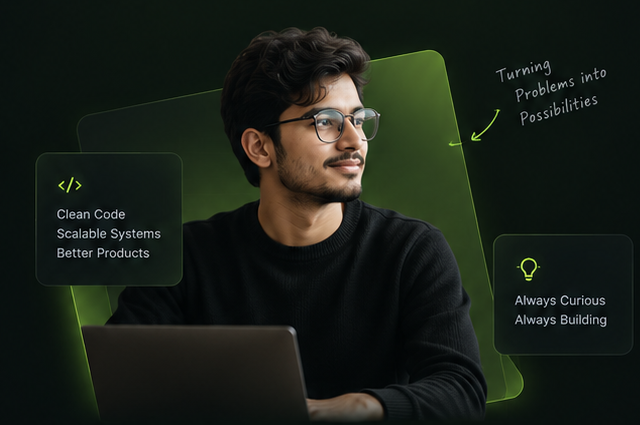

Backend Development
Designing reliable APIs and scalable systems.
I'm Ankit Kumar, a software engineer who loves turning complex problems into simple, scalable solutions. I enjoy working across backend systems, mobile apps, and full-stack products, always with a focus on real-world impact.

Designing reliable APIs and scalable systems.
Building modern, user-friendly mobile apps with Kotlin.
Turning ideas into real-world products.
Creating efficient and maintainable data models.
Designing scalable and resilient architectures.
Improving developer productivity with the right tools.
I take time to understand the real problem and the people it impacts.
Design a simple and scalable solution.
Write clean, maintainable code with best practices.
Get feedback, learn, and keep iterating.
Through technology, continuous learning, and meaningful products, I aim to create a positive impact.
“Good software isn't just about code, it's about the people it helps.”